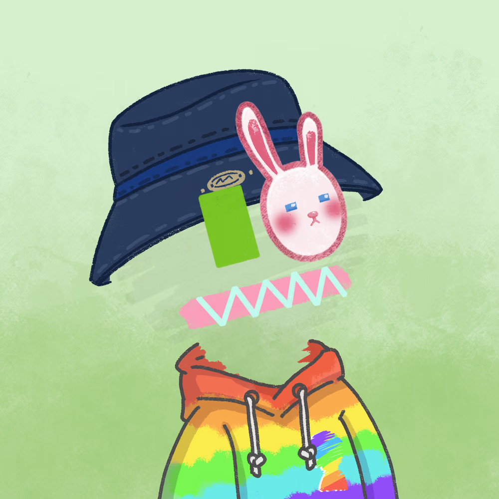

About Me
Hello, I'm from Ecuador and I love programming and learning things by myself, even topics far away from the class curriculum, such as Flutter, Supabase, and mobile development. I enjoy taking on challenging projects that can be stressful at times, but ultimately result in significant learning. Currently, I'm working for a US company as a data steward. The income from this job is invested in cryptocurrencies, as I'm also curious about Web3 and blockchain contracts.
NFT Experience
I bought an NFT in 2017, and since then I haven't been able to sell it. This experience taught me that NFTs can be valuable for creators and artists, but for traders or investors, they're something I personally wouldn't recommend purchasing as an investment vehicle.